1. Гараж ночью
Обычный HTML, наш навык design-taste-frontend
Тёмный графит, один оранжевый акцент как маячок. Узлы стоят «под лампой», цены как табло.
Риск: тёмные сайты хуже читаются на солнце с телефона.
Открыть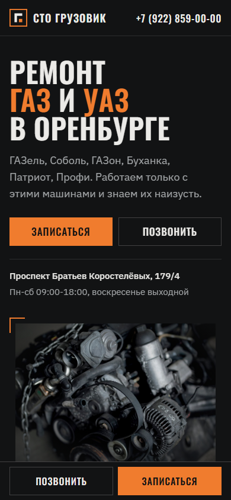
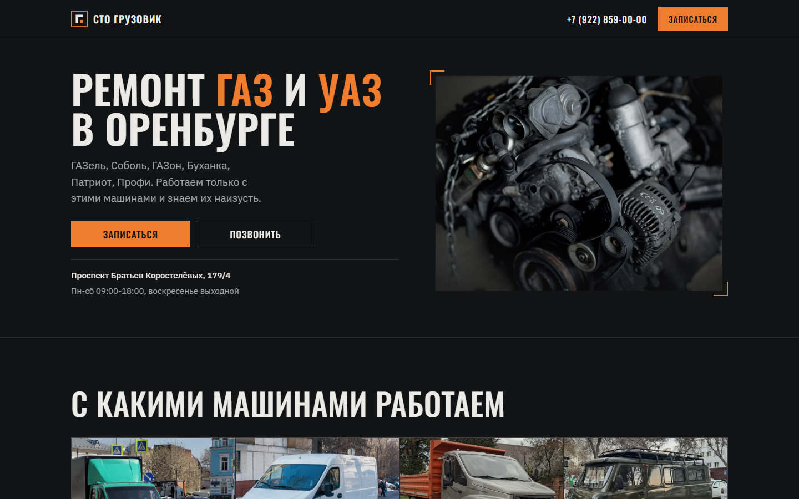
2. Техкарта
Обычный HTML, наш навык design-taste-frontend
Лист заводской техкарты: бумага, синие чернила, красный штамп. Выноски на фото ГАЗели ведут к ценам, прайс как каталог запчастей.
Риск: самая длинная страница, блок цен большой.
Открыть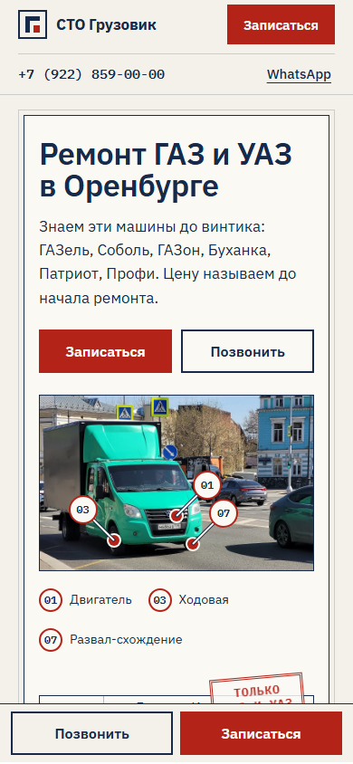
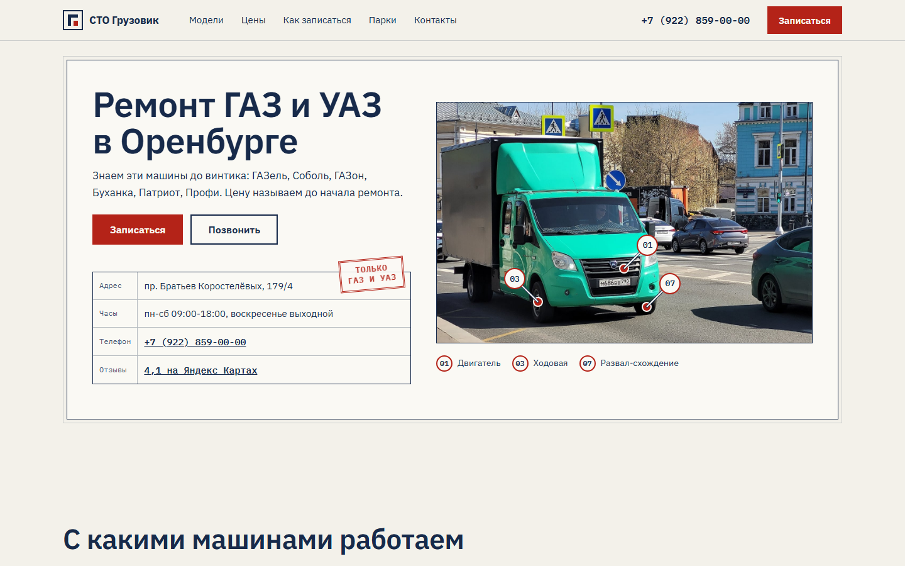
3. Степь и бездорожье
Обычный HTML, наш навык design-taste-frontend
Песок, хаки, тёмная земля. Блоки как шильдики с заклёпками, цены как бирки, табличка «56 RUS».
Риск: характер «под УАЗ», ГАЗель и ГАЗон тут на втором плане.
Открыть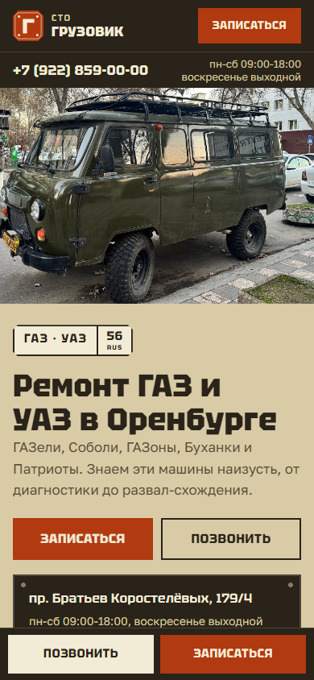
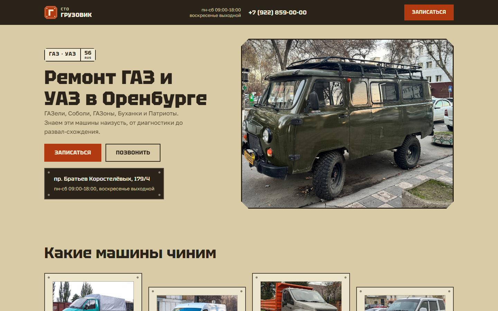
4. Видно с дороги
Обычный HTML, наш навык design-taste-frontend
Белый, жёлтый, чёрный, огромные цифры. Каждый узел как дорожная табличка, на телефоне снизу «Позвонить / Записаться».
Риск: громко и просто, может показаться «дешёвым».
Открыть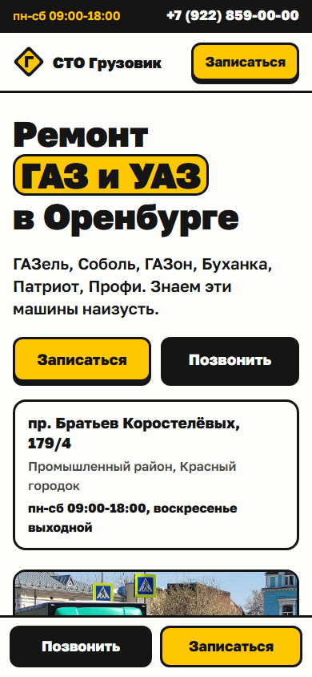
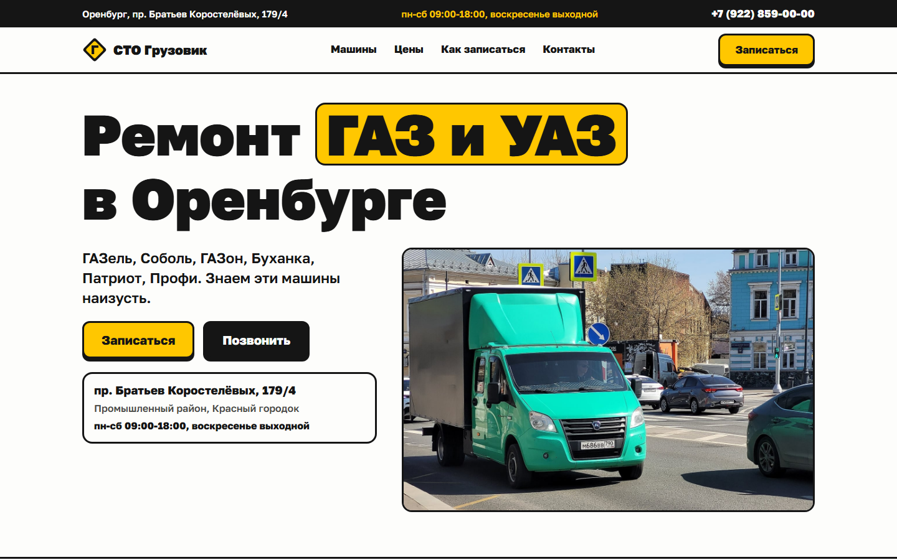
5. Как у дилера
Обычный HTML, наш навык design-taste-frontend
Светлый, тёмно-синий, аккуратный. Вкладки ГАЗель / Соболь / ГАЗон / УАЗ меняют фото и цены.
Риск: самый «правильный», но и самый похожий на другие сайты.
Открыть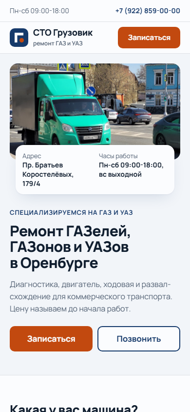
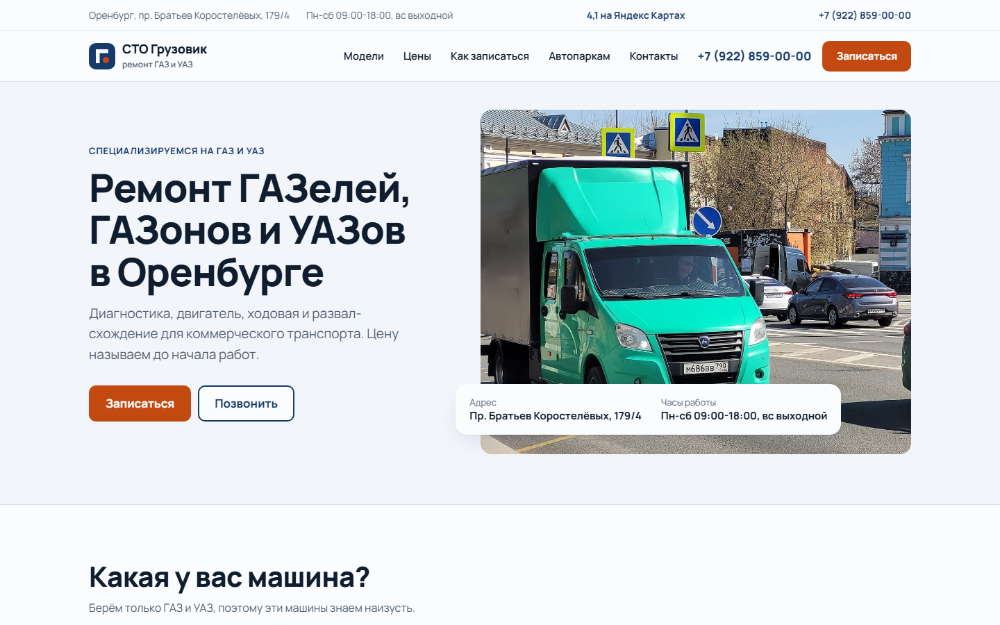
6. Витрина с анимацией
UI UX Pro Max + 21st.dev + Framer Motion (React)
Тёмно-синий с оранжевым. Нажатие на модель переключает цены, цифры «прокручиваются», блоки плавно появляются при прокрутке.
Риск: тяжелее остальных (132 КБ скриптов против 0), сложнее править без сборки.
Открыть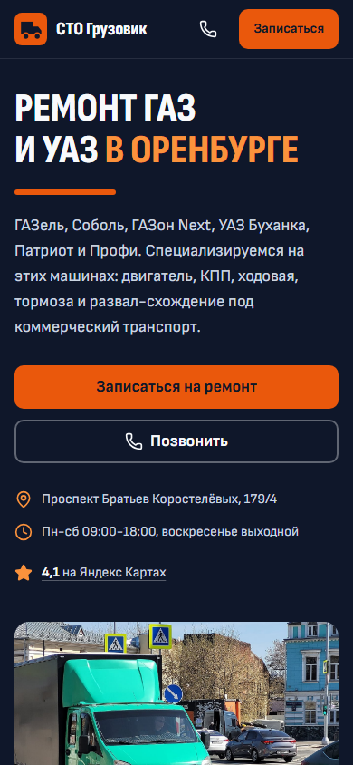
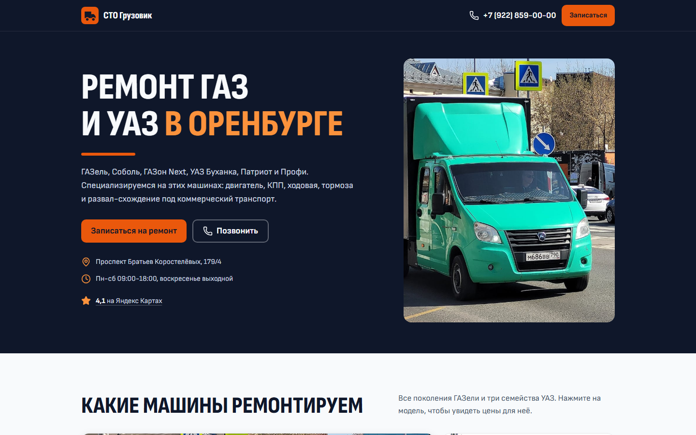